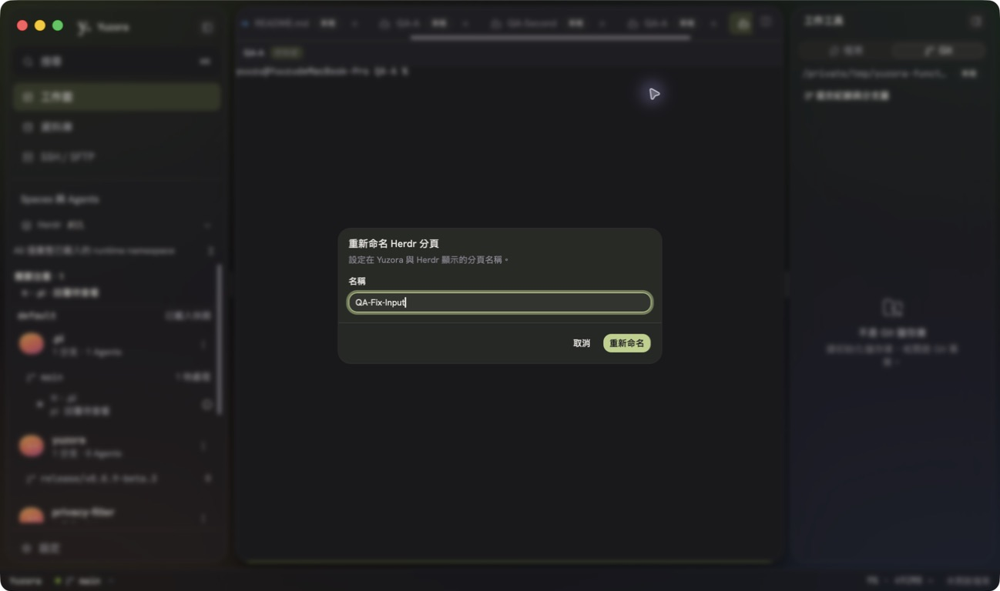
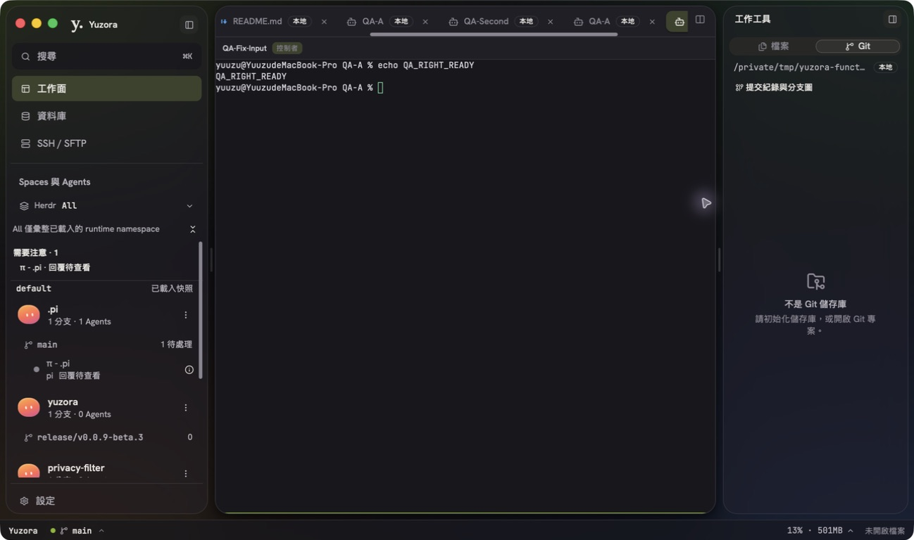
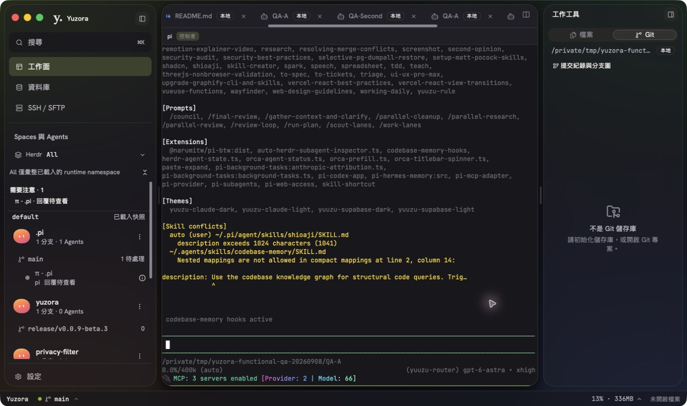
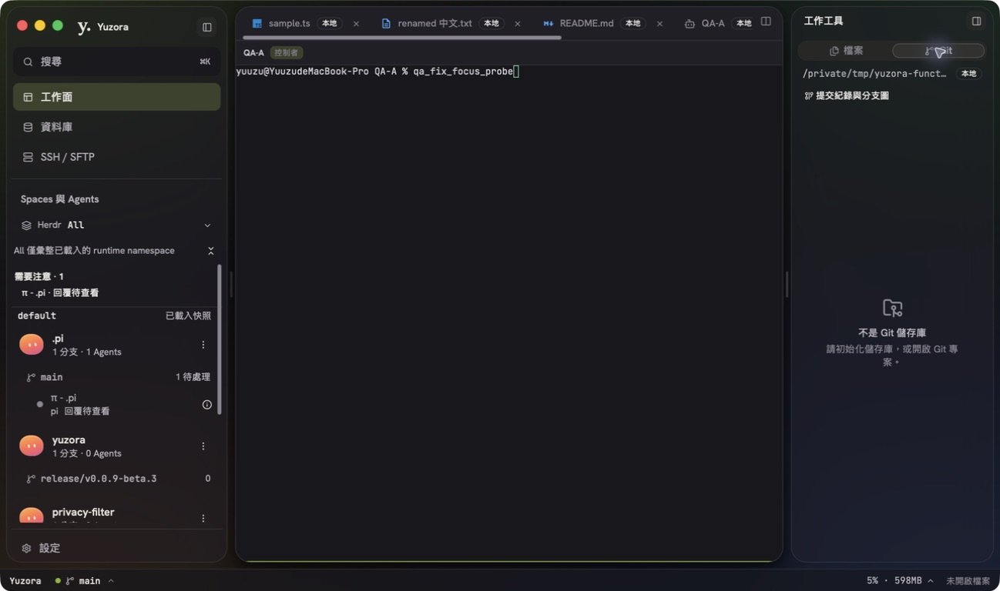
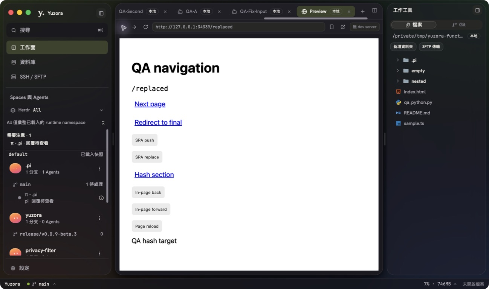
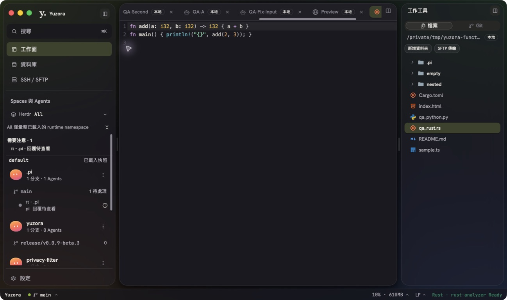
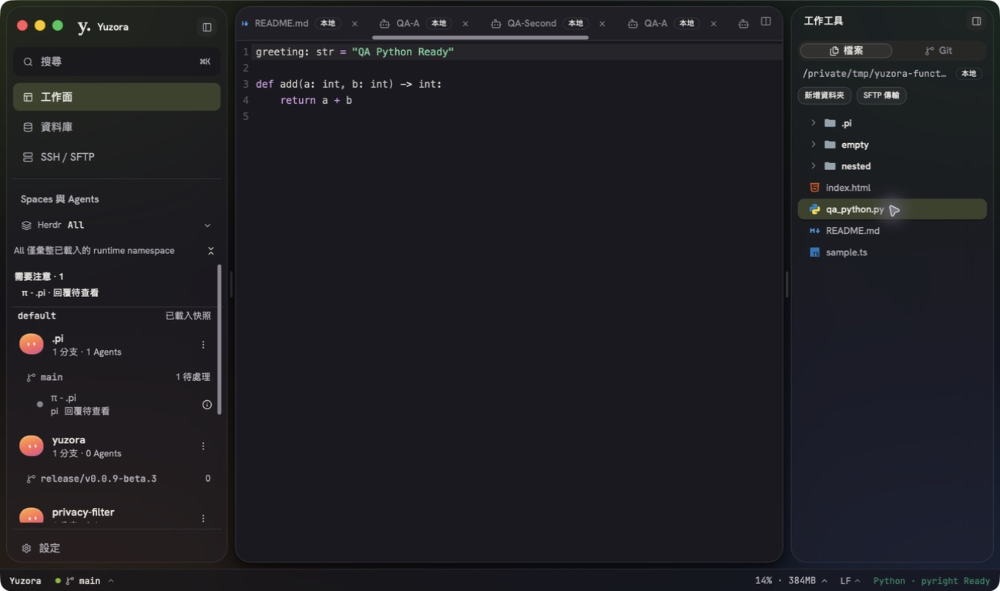

YUZORA / REPAIR ACCEPTANCE / 2026.09.08
Herdr 與功能修復驗收
本輪確認的 8 項程式缺陷已修復，通過 Astra xhigh review 及 macOS GUI 驗收。Python LSP 安裝環境已恢復。Herdr 偶發 timeout 保留診斷與未解釋部分。
8程式缺陷修復
2,723前端測試通過 · 219 files
92 / 92最終 Herdr service 回歸
GOAstra xhigh 程式審查
這是修復驗收，不代表所有功能已完整驗證。原規劃 108 情境仍含未測、部分驗證與遠端環境受限案例。QA26-001 最初首敗原因未完全證實；不列為已修復。
原始 QA 報告保留當時 49 個 GUI cases 及失敗結果。
逐項修復與證據
每項使用獨立情境驗證，GUI、單元測試及程式 review 分別記錄。下方包含 8 個修復、1 個環境處置及 1 個 timeout 診斷。
QA26-002FIXED
新增 Terminal 名稱輸入被 shell 搶走
- 原因
- Terminal 的自動 focus 與 IME 寫入未避開開啟中的 dialog。
- 修復／處置
- pending input dialog 與 mounted modal 都會阻止終端搶焦點及寫入；關閉 dialog 後正常恢復。
- 驗證
- 立即輸入 QA-Fix-Input → 名稱欄位保留；Enter 改名成功；shell 仍是空白 prompt。含 modal 關閉後恢復輸入回歸測試。
修改位置
src/app/panels/HerdrTerminalPage.tsx

AX 文字記錄 · 畫面是單一狀態；完整操作結果見 GUI ledger。QA26-007FIXED
Herdr pane zoom 沒有放大／狀態容易丟失
- 原因
- zoom 顯示與 BSP 子樹、pane 實例生命週期未正確協調。
- 修復／處置
- 保留原 BSP 與 connector，隱藏非焦點分支；放大時停用 separator；還原使用原始 ratio。
- 驗證
- 右 pane 全幅 → 還原兩 pane；左 shell 變數 zoom_alive 保留。鍵盤兩次 Right 調整 50%→60%，官方 layout 確認 ratio 0.6。滑鼠 drag 未取得可靠工具證據。
修改位置
src/app/panels/HerdrTerminalPage.tsx

AX 文字記錄 · 畫面是單一狀態；完整操作結果見 GUI ledger。QA26-003FIXED
Herdr Agent 新增入口無法抵達
- 原因
- 現行 launcher 沒有掛載既有新增 Agent dialog。
- 修復／處置
- 在現行 Session 選單開啟既有 dialog，保留 runtime、Space 與 capability 限制。
- 驗證
- 搜尋 pi → 在 local/default/QA-A 成功啟動；Sidebar 與即時 terminal 出現。停止的 Session 禁用新增。pending Escape 競態由單元測試驗證。
修改位置
src/app/workbench/HerdrLauncher.tsx

AX 文字記錄 · 畫面是單一狀態；完整操作結果見 GUI ledger。QA26-004FIXED
Inspector 行數逐字輸入被 clamp 改寫
- 原因
- 每次輸入立即轉數字及 clamp，中間字串無法保留。
- 修復／處置
- 使用字串 draft；blur／Enter 提交後限制 20–500，空白回 120，小數取整。
- 驗證
- 逐字 80→80、120→120；999 提交→500；空白提交→120。GUI 證據為現場操作文字紀錄。
修改位置
src/app/workbench/HerdrAgentInspector.tsx
操作／診斷紀錄
QA26-005FIXED
非 Git 資料夾顯示 raw trust JSON
- 原因
- 在識別非儲存庫前先做 Git 信任要求；首版 early return 又遺漏 registry 收尾。
- 修復／處置
- 先做 filesystem-only repo presence 判斷，再保留真實 repo 的 trust gate；以共同 finish 路徑釋放 watcher、操作權限並保護新 generation。
- 驗證
- QA-A 顯示「不是 Git 儲存庫」；無 raw JSON。新增 watcher Drop、authority、stale generation 與巢狀 repo trust 回歸。
修改位置
src-tauri/src/git_service.rs

AX 文字記錄 · 畫面是單一狀態；完整操作結果見 GUI ledger。QA26-006FIXED
Preview 網址與前進／後退狀態失同步
- 原因
- 推算的 URL ledger 無法分辨 redirect、SPA replace 與原生 traversal。
- 修復／處置
- 本機 native webview 讀取實際 URL、canGoBack／canGoForward，執行原生歷史操作；可見時單飛輪詢，owner／generation 隔離，保留跨 iframe 邊界歷史。
- 驗證
- 無 slash 首頁、Next、redirect、toolbar Back、SPA push/replace、頁內 Back/Forward、hash、reload 均實機通過；新分支清除 Forward；Settings 遮蔽／還原正常。remote/static iframe 內頁同步不在此修復範圍。
修改位置
src/app/panels/PreviewPanel.tsxsrc/preview/previewCommands.tssrc/state/previewStore.tssrc/lib/ipc.tssrc-tauri/src/preview_webview.rssrc-tauri/src/lib.rssrc-tauri/Cargo.toml

AX 文字記錄 · 畫面是單一狀態；完整操作結果見 GUI ledger。QA26-008FIXED
無 branch 的 Agent label 出現 undefined
- 原因
- Agent accessibility label 直接使用可能不存在的 branch。
- 修復／處置
- 與父層一致使用 branch ?? label。
- 驗證
- undefined／null 兩種回歸；GUI label 顯示 π - QA-A · pi · 待命 · QA-A · default。
修改位置
src/app/workbench/SpaceAgentTree.tsx
操作／診斷紀錄
QA26-009FIXED
Rust Analyzer 完整性誤判
- 原因
- 下載壓縮檔的摘要被拿來比對解壓後 executable。
- 修復／處置
- sha256 保留 archive 驗證；新增 executableSha256 驗證解壓輸出及啟動。六平台官方 artifact 驗證後更新摘要；ZIP generator 使用 fflate，免除未宣告的 Python 環境相依。
- 驗證
- catalog 18、解壓／tamper 1、generator 13 個測試通過；六平台 digests 獨立覆核；clean PATH 驗證。GUI 重新偵測既有 binary 後 Rust Ready，沒有重装。
修改位置
src-tauri/host/src/lsp_catalog.rssrc-tauri/host/src/lsp_download.rssrc-tauri/lsp-catalog/manifest.jsonscripts/update-lsp-integrity-catalog.tspackage.jsonbun.lock

AX 文字記錄 · 畫面是單一狀態；完整操作結果見 GUI ledger。ENV-PYRIGHTENVIRONMENT_REMEDIED
Python LSP 本機安裝環境恢復
- 原因
- 現有 Homebrew launcher 與審核 wrapper 不符，managed prefix 尚未安裝。
- 修復／處置
- 透過 App 的 Python「一鍵安裝」安裝 managed Pyright 1.1.413，保留完整性驗證及 Homebrew。
- 驗證
- qa_python.py 顯示 Python · pyright Ready；Ready 不代表所有補全及 diagnostics 情境已驗收。

AX 文字記錄 · 畫面是單一狀態；完整操作結果見 GUI ledger。QA26-001DIAGNOSED_NOT_FIXED
Herdr CLI 偶發 timeout
- 原因
- 高程序啟動壓力下可重現 shell 在 dyld 啟動階段停滯；最初首敗是否同因未完全證明。
- 修復／處置
- 保留 production timeout 及原回歸測試；未以加長 timeout 或略過測試掩蓋。
- 驗證
- 8-way 64/64、32-way 32/32 通過；64-way 24/64 timeout。解除壓力後 exact test 0.22s 通過，最後 service 92/92 通過。
操作／診斷紀錄
Astra low 修復 → Astra xhigh review
- 拆分 Herdr 終端／Agent 與 Inspector／Git／Preview 子任務，Astra low 並行修復；修復前建立 red regression。
- xhigh 第一輪指出 Git early return 遺漏 registry 收尾，以及 Preview ledger 不能代表原生 redirect／SPA／traversal。回送 low 修復並補測。
- GUI 新增確認 Agent label 與 Rust Analyzer checksum 問題。low 修復後，xhigh 又指出 ZIP generator 隱含 Python 相依，改成明確宣告的 fflate。
- xhigh 最後給出 GO；parent 完成完整前端測試、Rust 檢查與最新 binary GUI 驗收。本報告不把 review GO 擴大成所有平台驗收完成。
最終 review 記錄 · 修復 ledger JSON
驗證結果
| 檢查 | 結果 | 輸出 |
|---|
| 前端完整 Vitest | PASS · 219 files / 2,723 tests · 67.68s
bun run test --maxWorkers=4 | 摘錄 |
| Herdr service 最終回歸 | PASS · 92 passed / 0 failed · 11.05s
cargo test --locked --manifest-path src-tauri/host/Cargo.toml --lib herdr_service::tests -- --test-threads=16 | 摘錄 |
| Herdr service / transport 整組 | PASS · 114 passed / 0 failed · 8.18s（修復期間）
cargo test --locked --manifest-path src-tauri/host/Cargo.toml --lib herdr -- --test-threads=16 | 摘錄 |
| Frontend build / typecheck | PASS · exit 0；Vite 有既有 chunk / dynamic import 警告
bun run build | 摘錄 |
| Debug Rust build | PASS · 12.03s；已啟動相同 SHA256 binary
cargo build --locked --manifest-path src-tauri/Cargo.toml | 摘錄 |
| ESLint | PASS_WITH_WARNINGS · 0 errors / 56 warnings
bun run lint | 摘錄 |
| Clippy 基線 | PASS · 精確符合既有 90 diagnostics
既有 Clippy baseline check（本輪輸出） | 摘錄 |
| Rust format | PASS · exit 0
cargo fmt --check（desktop / host） | 摘錄 |
| Preview focused | PASS · 7 files / 82 tests
bun run test -- src/app/panels/previewPanel.test.tsx src/preview src/state/previewStore.test.ts | 摘錄 |
其餘 focused regression：Herdr terminal 41、Agent／Inspector 19、Agent label 8；Git filesystem 與 registry lifecycle 測試通過；LSP catalog 18、實際解壓／tamper 1、generator 13。以上由對應工作者與 reviewer 驗證；前端案例包含在最終 2,723 項內，不能重複加總。
macOS all-targets Cargo check 通過。本輪未重跑會自行 staging／commit 的完整 Rust fixture suite；測試範圍以列出的 Herdr、Git、LSP、Preview 與編譯檢查為準。既有 lint／Clippy warnings 未列為新增功能缺陷。
環境、限制與重現
- 執行版本
- Yuzora 0.0.9-beta.3；macOS；Herdr 0.9.0 / protocol 22。ADR 的 0.8.2 / protocol 20 是較早基線。
- 最新 binary
/tmp/Yuzora Current QA.app 與 workspace debug binary 摘要相同：b509bb17e2b58e2785f131da2f0d033ba2becf1c8414d2d879397ac18be1b538。已重啟 App 載入最新前端；macOS Tauri 模式停用 HMR，舊視窗驗證不算最終 patch 結果。- 平台範圍
- Windows／Linux native API 已做來源 review，但没有平台編譯及實機驗收。remote／static iframe 內頁 URL 同步維持隔離限制。未驗證安裝包、updater 或全部遠端流程。
- Preview 重現
- 獨立 fixture 原始碼，以
bun run web-nav-fixture.ts 啟動於 127.0.0.1:34339。輸入無 slash URL，再依 Next → Redirect → Back → SPA push → SPA replace → 頁內 Back／Forward → Hash → Reload → Back 測試。已有 server 執行時不需再啟動。 - 狀態 Ready
- Rust/Python LSP 啟動狀態已實測；不代表所有診斷、補全、重連情境完整通過。Rust fixture 已補最小 Cargo.toml。
- 測試清理
- 本輪新增 Pi、split shells 及 focus-probe shell 已退出，相關 UI tab 已關閉；原有 QA-A／QA-Second 與其他使用者 Agents 保留。最終 AX。
- 保留環境
- App／Vite、既有 fixture server 34329 與本輪 34339 仍啟動，便於查看；fixtures 位於
/tmp/yuzora-functional-qa-20260908。QA SQLite profile 維持離線，SSH profile 已移除。設定維持先前還原值。
六平台 archive / executable 摘要 · timeout 壓力診斷
修改範圍與工作樹
執行前工作樹已含大量修改。以下對照 /tmp/yuzora-fix-20260908-baseline 的修復前 snapshot；額外的 LSP scripts／catalog／lock 使用該子任務修復前備份。沒有 staging、commit 或 push；27 個程式／設定檔相對修復前有變更。
本輪增量 patch · 逐檔 SHA256 與 baseline。patch 不含本報告文件，也不包含 baseline 中既有變更；不應直接對純 Git HEAD 套用。
檢視 27 個變更檔案
bun.lock modifiedpackage.json modifiedscripts/update-lsp-integrity-catalog.test.ts modifiedscripts/update-lsp-integrity-catalog.ts modifiedsrc-tauri/Cargo.toml modifiedsrc-tauri/host/src/lsp_catalog.rs modifiedsrc-tauri/host/src/lsp_download.rs modifiedsrc-tauri/lsp-catalog/manifest.json modifiedsrc-tauri/src/git_service.rs modifiedsrc-tauri/src/lib.rs modifiedsrc-tauri/src/preview_webview.rs modifiedsrc/app/panels/HerdrTerminalLayout.test.tsx modifiedsrc/app/panels/HerdrTerminalPage.test.tsx modifiedsrc/app/panels/HerdrTerminalPage.tsx modifiedsrc/app/panels/previewPanel.test.tsx modifiedsrc/app/panels/PreviewPanel.tsx modifiedsrc/app/workbench/HerdrAgentInspector.test.tsx modifiedsrc/app/workbench/HerdrAgentInspector.tsx modifiedsrc/app/workbench/HerdrLauncher.tsx modifiedsrc/app/workbench/SpaceAgentSidebar.test.tsx addedsrc/app/workbench/SpaceAgentTree.test.tsx modifiedsrc/app/workbench/SpaceAgentTree.tsx modifiedsrc/lib/ipc.ts modifiedsrc/preview/nativeNavigation.test.ts addedsrc/preview/previewCommands.test.ts modifiedsrc/preview/previewCommands.ts modifiedsrc/state/previewStore.ts modified